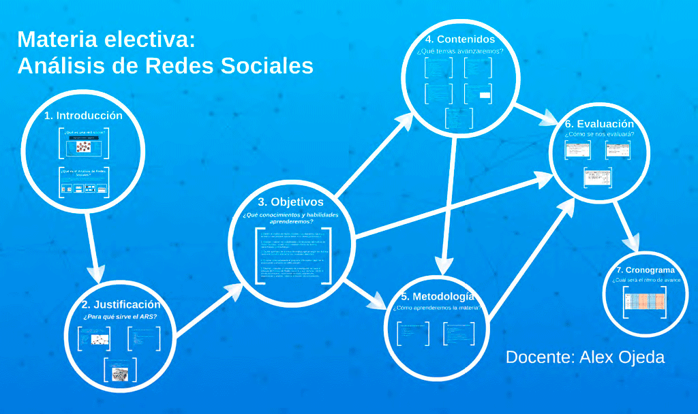

Blog
Diapositivas de la presentación del plan global
Publicado el 28 de marzo de 2015 a las 16:00

Diapositivas de la presentación del plan global que se llevo a cabo en la clase del 26 de marzo.
Leer másUn video introductorio sobre el ARS
Publicado el 22 de marzo de 2015 a las 9:00
Una introducción visual al Análisis de Redes Sociales.
Leer másUna breve caracterización del ARS
Publicado el 18 de marzo de 2015 a las 11:00

Aquí transcribo un extracto del primer capitulo del libro El desarrrollo del Análisis de Redes Sociales de Linton Freeman (2012). Este capitulo hace una breve caracterización de lo que es el Análisis de Redes Sociales.
Leer más